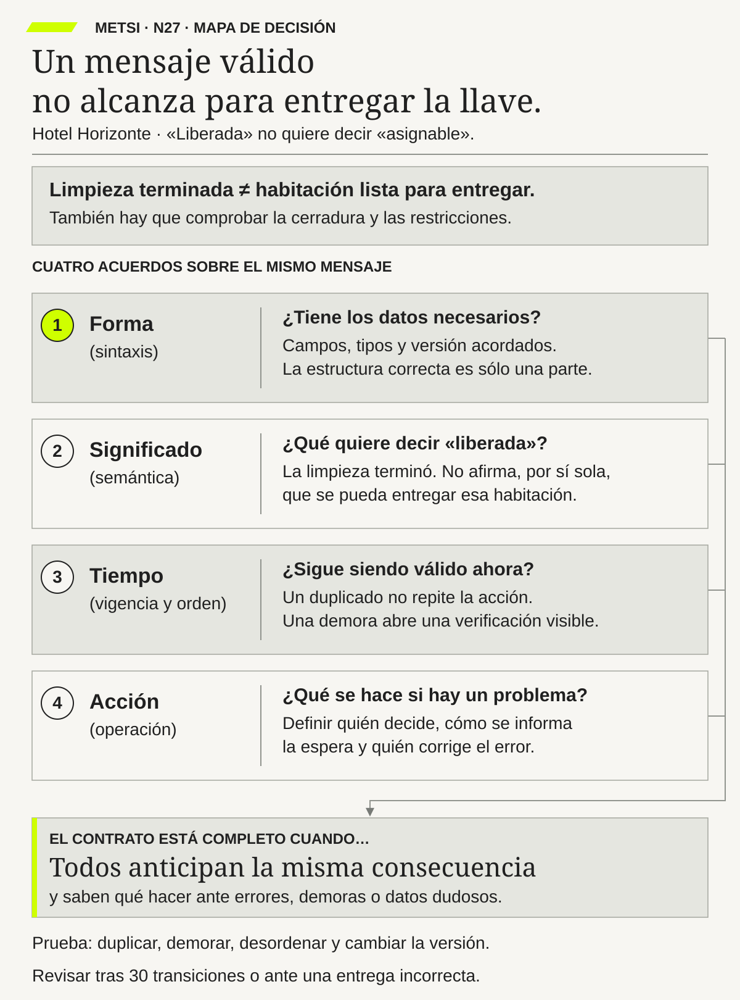

N27 · Propuesta de mapa
Forma, significado, tiempo y acción deben acordarse juntos para que el mismo mensaje no produzca decisiones incompatibles.
Revisión visual. Todavía no incorporado al PDF. Cuerpo mínimo previsto: 11,44 pt a 173 mm de ancho.
